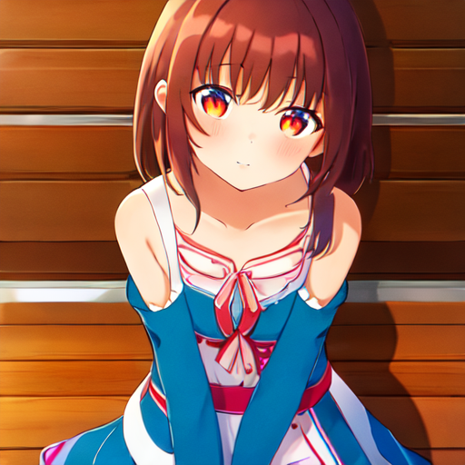
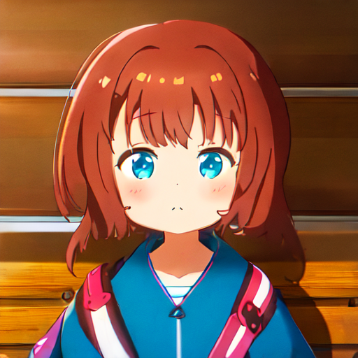
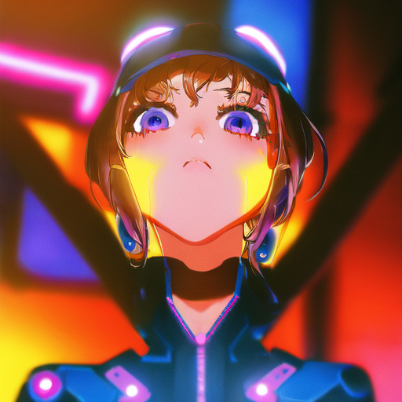
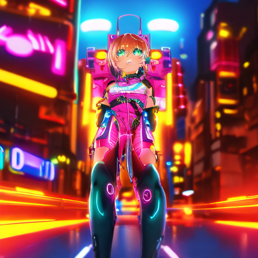
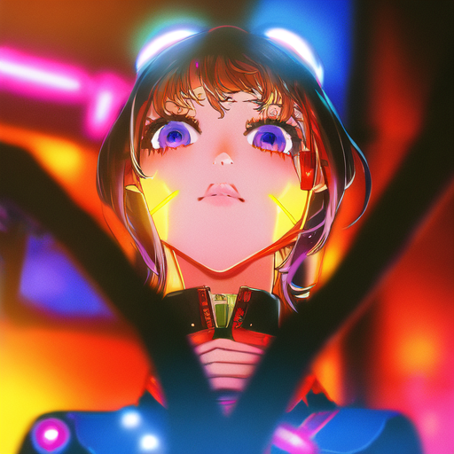
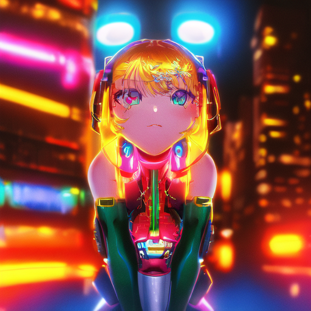

脸崩归因诊断 · 一次拆干净两个疑点
同引擎 / 同 seed 42 / 30 步 / cfg 7.5，全部 outputs/diagnosis_face/ · 2026-09-03 20:20
组A · 金标准公平重测 —— 回答"anything-v5 底模是不是天花板"
上轮金标准测试用了错误触发词（"yoneya style" 不是 Chanter LoRA 的触发词，它触发词就是 1girl），这次用干净 prompt 重新测。
prompt：1girl, solo, looking at viewer, masterpiece, best quality（无任何风格词，纯靠 LoRA 渗出）

A1 · 金标准 scale 0.6
作者推荐区间下限。脸不崩 + 能认出米山舞 → 底模没到天花板，上轮是测试姿势问题

A2 · 金标准 scale 1.0
作者推荐权重。与 A1 对比：风格浓度随 scale 变化多少
判读规则：A1/A2 脸不崩且能一眼认出米山舞 → 底模有救，"回炉数据集"路线可行；
两档脸都崩或完全不像 → anything-v5 天花板坐实，要出真·米山舞必须换 SDXL/Illustrious 系底模重训。
组B · 场景脸崩归因 —— 回答"是 scale 1.5 太狠，还是场景里脸太小"
SD1.5 的老毛病：复杂场景里人物脸只占几十像素，本来就近乎必崩，LoRA 高强度只是放大器。三个变量各测一头。
参照组（右一）是上轮最终对决里脸崩的那张，同 seed 可直接对照。

B1 · scale 1.5 + 上半身构图
prompt 加 upper body, detailed face，负面加 bad/deformed face。脸放大后 1.5 还崩吗？

B2 · scale 1.2 + 原全身场景
构图不变，只把 scale 降到 1.2。若脸不崩 → 元凶是 scale；若还崩 → 元凶是构图

B3 · scale 1.5 + 全身 + 脸部质量词
构图 scale 都不变，只加 detailed face + 负面 bad face。测 prompt 能救几分

参照 · 上轮脸崩原图（v5c_e3 · 1.5）
同 seed 42 同场景。上面三张哪张的脸比这张明显好，哪个变量就是解药
判读规则：
① B1 脸好 → 构图是元凶，作品集出图用上半身/胸像构图即可，scale 1.5 保留；
② B2 脸好 → scale 是元凶，引擎默认降到 1.2；
③ B3 脸好 → prompt 就能救，模板追加脸部词即可（最省事）；
④ 全都崩 → 组合拳（1.2 + 上半身构图）或接受现状。三个变量不互斥，可叠加。
这轮之后就没有中间实验了，直接做决定
| 组A 结果 | 组B 结果 | 行动 |
|---|
| 金标准能认出 | B1/B2/B3 任一救回 | 引擎配置按 B 的结论更新 → 转作品集出图（9.13 前时间宝贵） |
| 金标准能认出 | 全崩 | 接受"风格 LoRA 能力已验证"，作品集出图用近景构图，先冲 ControlNet + ComfyUI |
| 金标准也认不出 | 任意 | anything-v5 天花板坐实；9.13 前不再折腾 SD1.5，作品集用现有成果，SDXL 回炉排到投递后 |